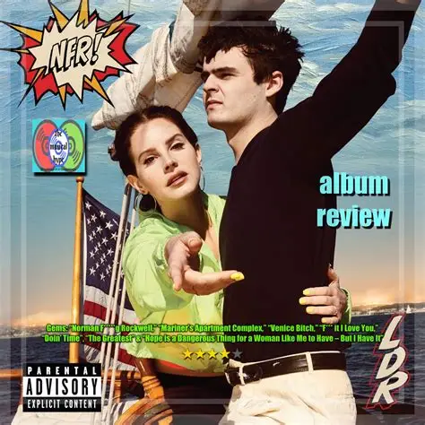
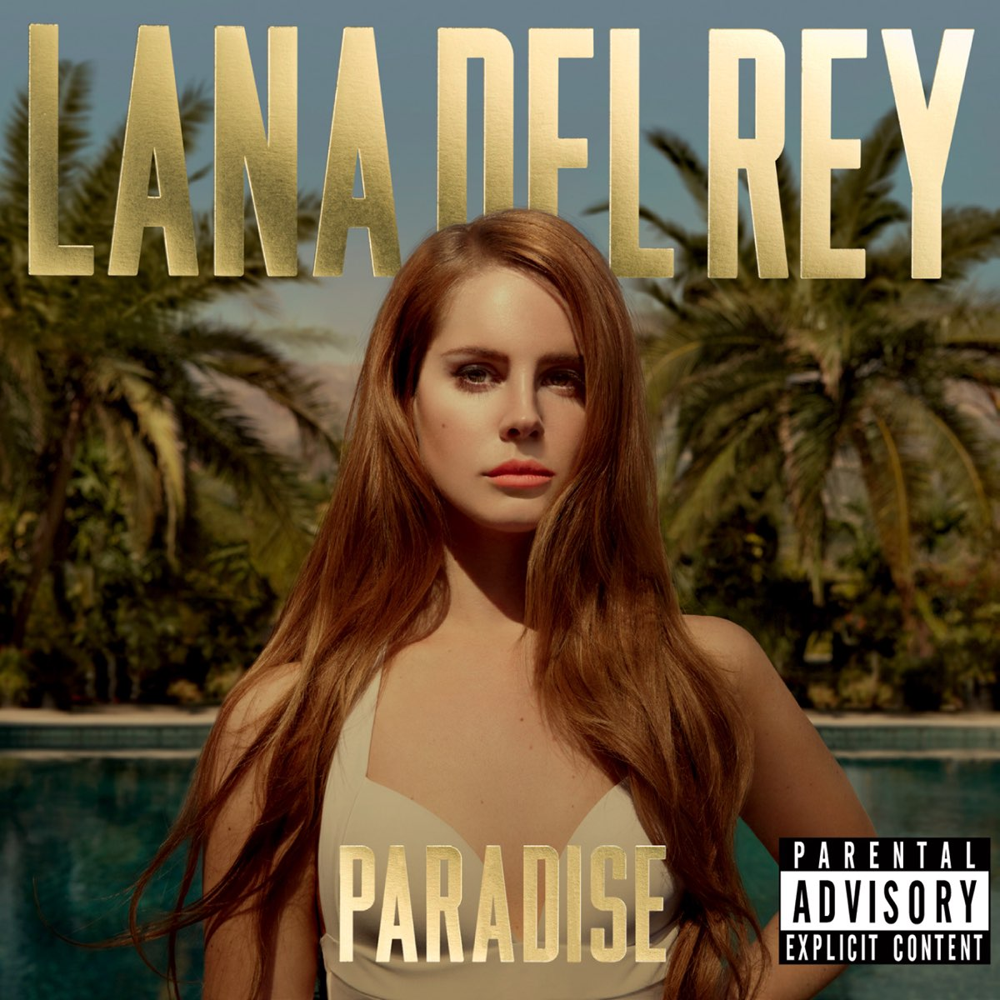
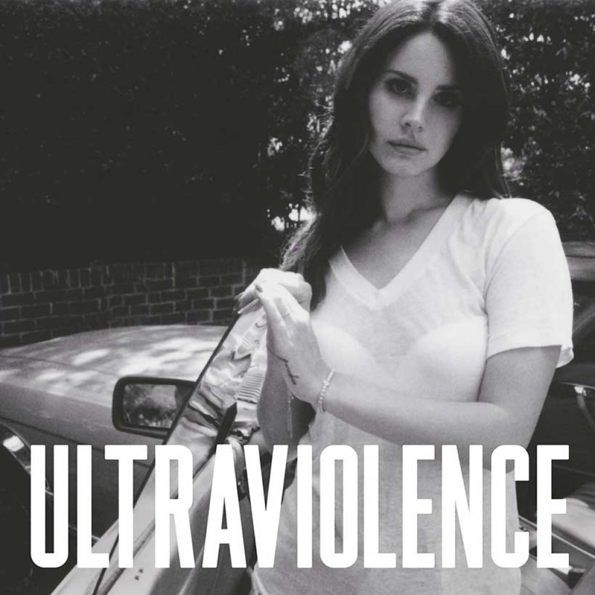
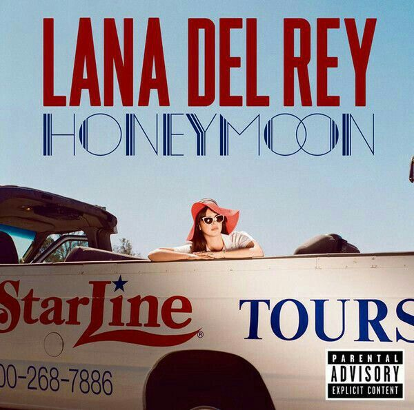
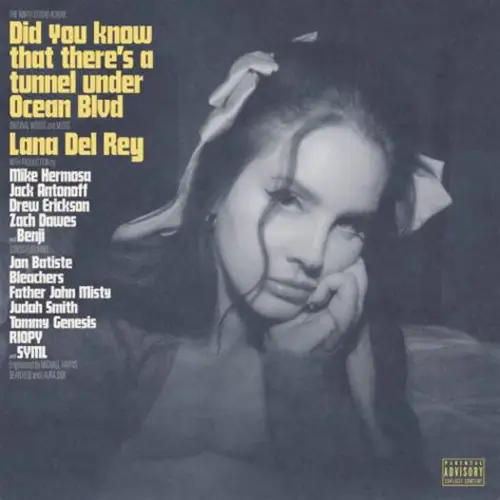

Born to Die
2012

A journey through her music
From sun-bleached Americana to string-drenched heartbreak, Lana Del Rey has carved a unique path in the music world. Explore her albums, live moments, and the stories behind the songs that have defined a generation.
The discography
Click an album to see selected tracks.
2012

2012

2014

2015
2021

2023
Featured album
2019
Her defining record trades orchestral sweep for piano, dry wit, and long unspooling verses. Widely hailed by critics as a modern American classic, it marked a high point in her collaborative work with producer Jack Antonoff and earned a Grammy nomination for Album of the Year.
The artist
Since Born to Die in 2012, Lana Del Rey has built a catalogue around America as a place of promise and ruin, love as devotion and danger, and fame as a gilded trap. She rose to global prominence in 2011 with the viral success of her breakthrough single "Video Games," followed by her music frequently blends baroque pop, dream pop, and trip-hop with references to mid-century Hollywood, tragic romance, and vintage pop culture. Over the years, her songwriting and production have evolved across acclaimed records including Ultraviolence (2014), Norman Fucking Rockwell! (2019), and Did You Know That There's a Tunnel Under Ocean Blvd (2023), cementing her status as one of the most influential alternative-pop artists of her generatio
Read more on Wikipedia